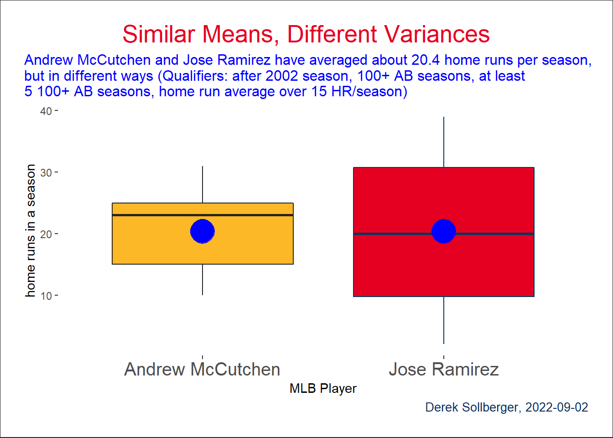

library("Lahman")
library("tidyverse")For a future lecture in my Sports Analytics course, I want an example of a baseball statistic where the averages for two players are similar, but their variances in that same statistic are quite different. It is still early in the semester, so I am looking for an easy-to-understand statistic. Therefore, I will explore home runs per season.
A Walk Through the Data
The Lahman database contains a lot of baseball statistics, and today I will focus on the Batting data frame.
For interest, I will filter the observations to retain the players from the past 18 seasons (since my students are about 18 years old, haha) and player-seasons that included at least 100 at-bats.
df <- Batting |>
filter(yearID >= (2021 - 18)) |>
filter(AB >= 100)To be illustrative, permit me to select mainly the seasons and home run columns.
df <- df |>
select(playerID, yearID, AB, HR)At the moment, here is what our data looks like.
head(df) playerID yearID AB HR
1 abreubo01 2003 577 20
2 alfoned01 2003 514 13
3 almoner01 2003 100 1
4 alomaro01 2003 263 2
5 alomaro01 2003 253 3
6 alomasa02 2003 194 5Since I am concerned with season averages, I am going to group_by the player name. From there, let us then compute the averages and standard deviations for home runs.
df <- df |>
group_by(playerID) |>
mutate(xbar = mean(HR, na.rm = TRUE),
s = sd(HR, na.rm = TRUE)) |>
ungroup()
head(df)# A tibble: 6 × 6
playerID yearID AB HR xbar s
<chr> <int> <int> <int> <dbl> <dbl>
1 abreubo01 2003 577 20 14.3 8.94
2 alfoned01 2003 514 13 8.67 5.86
3 almoner01 2003 100 1 1 NA
4 alomaro01 2003 263 2 2.67 0.577
5 alomaro01 2003 253 3 2.67 0.577
6 alomasa02 2003 194 5 2.33 2.52 For various reasons, some players only appear once in this subset of data, so their variance is effectively zero (missing in the computation). To answer my original inquiry mathematically, I will now compute the coefficient of variation (and avoid a divide-by-zero error from those players who hit zero home runs).
\[CoV = \frac{s}{\bar{x}}\]
df <- df |>
# filter(!is.na(s)) |>
filter(xbar > 0) |>
mutate(CoV = s/xbar) |>
arrange(desc(CoV))In this metric, the top scores are
head(df)# A tibble: 6 × 7
playerID yearID AB HR xbar s CoV
<chr> <int> <int> <int> <dbl> <dbl> <dbl>
1 gathrjo01 2005 203 0 0.2 0.447 2.24
2 gathrjo01 2006 154 0 0.2 0.447 2.24
3 gathrjo01 2006 229 1 0.2 0.447 2.24
4 gathrjo01 2007 228 0 0.2 0.447 2.24
5 gathrjo01 2008 279 0 0.2 0.447 2.24
6 burriem01 2008 240 1 0.25 0.5 2 and the bottom scores are
tail(df)# A tibble: 6 × 7
playerID yearID AB HR xbar s CoV
<chr> <int> <int> <int> <dbl> <dbl> <dbl>
1 wadela01 2021 336 18 18 NA NA
2 wallsta01 2021 152 1 1 NA NA
3 walshja01 2021 530 29 29 NA NA
4 whiteel04 2021 198 6 6 NA NA
5 williju02 2021 119 4 4 NA NA
6 wisdopa01 2021 338 28 28 NA NAHeavy Hitters
So far, these results seem to be fine mathematically, but they might be uninteresting to the casual baseball fan. To further prune down to recognizable players, let me further filter the data down to players with at least 5 of these 100+ at-bat seasons in the past 18 seasons—and had an average of over 10 home runs per season.
df <- df |>
group_by(playerID) |>
mutate(seasons = n()) |>
ungroup() |>
filter(seasons >= 5) |>
filter(xbar >= 15) |>
arrange(desc(CoV))Now, the top scores in using the coefficient of variation as my metric are
head(df)# A tibble: 6 × 8
playerID yearID AB HR xbar s CoV seasons
<chr> <int> <int> <int> <dbl> <dbl> <dbl> <int>
1 solerjo01 2015 366 10 16.3 14.2 0.869 7
2 solerjo01 2016 227 12 16.3 14.2 0.869 7
3 solerjo01 2018 223 9 16.3 14.2 0.869 7
4 solerjo01 2019 589 48 16.3 14.2 0.869 7
5 solerjo01 2020 149 8 16.3 14.2 0.869 7
6 solerjo01 2021 308 13 16.3 14.2 0.869 7and the lowest \(Cov\) are
tail(df)# A tibble: 6 × 8
playerID yearID AB HR xbar s CoV seasons
<chr> <int> <int> <int> <dbl> <dbl> <dbl> <int>
1 delgaca01 2003 570 42 34.5 6.32 0.183 6
2 delgaca01 2004 458 32 34.5 6.32 0.183 6
3 delgaca01 2005 521 33 34.5 6.32 0.183 6
4 delgaca01 2006 524 38 34.5 6.32 0.183 6
5 delgaca01 2007 538 24 34.5 6.32 0.183 6
6 delgaca01 2008 598 38 34.5 6.32 0.183 6Well, I do recognize more of the player names, but I realize that the \(Cov\) alone does not completely solve my question since I still wanted similar averages between two players.
A Metric on top of a Metric
Now, hear me out. If there are two players \(A\) and \(B\), then what I am looking for is a rate of change of the form
\[Y = \bigg|\frac{s_{A} - s_{B}}{\bar{x}_{A} - \bar{x}_{B}}\bigg|\]
First, let me simplify the data frame down to just the player names, home run averages, and their standard deviations.
df2 <- df |>
select(playerID, xbar, s) |>
distinct()
head(df2)# A tibble: 6 × 3
playerID xbar s
<chr> <dbl> <dbl>
1 solerjo01 16.3 14.2
2 valenjo03 16.2 13.3
3 muncyma01 20.5 16.6
4 yelicch01 17.8 13.8
5 moralke01 16.1 11.7
6 carpema01 15.5 11.1Presently, I have about 221 observations, so a pair-wise calculations would be computed over about 4.8841^{4} pairs (hopefully manageable by a computer).
N <- nrow(df2)
df3 <- data.frame(player1 = rep(NA, N^2),
player2 = rep(NA, N^2),
Y = rep(NA, N^2))
for(i in 1:N){
for(j in 1:N){
row_number = j*(i-1) + j
df3$player1[row_number] <- df2$playerID[i]
df3$player2[row_number] <- df2$playerID[j]
if(i == j){
this_Y_value <- 0
} else {
denominator <- df2$xbar[i] - df2$xbar[j]
if(denominator == 0){ denominator <- 0.1 }
this_Y_value <- abs((df2$s[i] - df2$s[j]) / denominator)
}
df3$Y[row_number] <- this_Y_value
}
# if((row_number %% 10000) == 0){
# print(paste("Currently computing row number", row_number))
# }
}In this improvised metric, the top 10 scores were
df3 |>
arrange(desc(Y)) |>
top_n(10)Selecting by Y player1 player2 Y
1 mccutan01 ramirjo01 692.3109
2 polloaj01 utleych01 348.8826
3 mccutan01 ensbemo01 291.9631
4 hosmeer01 quentca01 244.8742
5 mccanbr01 belljo02 209.0920
6 jacobmi02 bayja01 198.8301
7 kentje01 giambja01 190.9222
8 jonesga02 kinslia01 182.2589
9 contrwi01 shawtr01 180.9609
10 polloaj01 morrilo01 179.5927Using the playerInfo() helper function in the Lahman package, we can verify the names of the players.
playerInfo("mccutan01") playerID nameFirst nameLast
11832 mccutan01 Andrew McCutchenplayerInfo("ramirjo01") playerID nameFirst nameLast
14966 ramirjo01 Jose RamirezData Visualization
This whole time, I was hoping for a neat boxplot.
df |>
filter(playerID == "mccutan01" | playerID == "ramirjo01") |>
ggplot(aes(x = playerID, y = HR)) +
geom_boxplot(color = c("#27251F", "#00385D"),
fill = c("#FDB827", "#E50022")) +
stat_summary(fun=mean, geom="point", shape=20, size=14, color="blue", fill="blue") +
scale_x_discrete(labels = c("Andrew McCutchen", "Jose Ramirez")) +
labs(title = "Similar Means, Different Variances",
subtitle = stringr::str_wrap("Andrew McCutchen and Jose Ramirez have averaged about 20.4 home runs per season, but in different ways (Qualifiers: after 2002 season, 100+ AB seasons, at least 5 100+ AB seasons, home run average over 15 HR/season)"),
caption = "Derek Sollberger, 2022-09-02",
x = "MLB Player",
y = "home runs in a season") +
theme(axis.text.x = element_text(size = 15),
legend.position = "none",
panel.background = element_blank(),
plot.background = element_rect(
fill = "#FFFFFF",
color = "#27251F"
),
plot.title = element_text(color = "#E50022", size = 20, hjust = 0.5),
plot.title.position = "plot",
plot.subtitle = element_text(color = "blue", size = 12, hjust = 0.0),
plot.caption = element_text(color = "#092C5C", size = 10, hjust = 1.0),
plot.caption.position = "plot",
plot.margin = margin(20, 20, 20, 20))